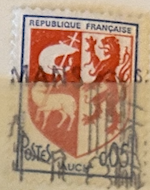
| SOURCE | TITLE| IMAGE MATCH | click to source page |
| eBay | Paris Coat of Arms Auch 1966 | eBay | 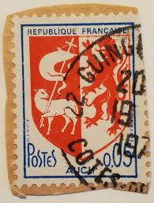 |
| eBay | Reunion #YT373 MNH 1967 Auch Arms [Mi452 360] | eBay | 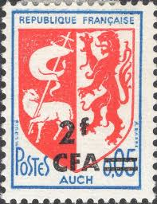 |
| eBay | Timbres français neufs de 1961 à 1970 unité avec 1 timbre | eBay | 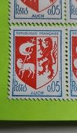 |
| french stamp France 0.05 postage poste timbre Republique Francaise selo francobolli Francia | 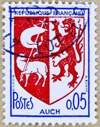 | |
| Dreamstime.com | Stamp with the Coat of Arms of Auch Editorial Image - Image of object, antique: 304062140 | 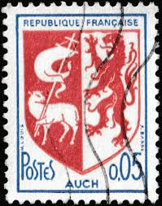 |
| Е EUR UROPA บ R ΡΑ A فما 超 回回 日 ២២- PL7 NEDERLAND NEDERLAND!2C AND 12c 12 කළைලා B 12C 15c nederland veertiende veer iende volk volkstelling 1971 | 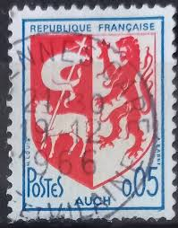 | |
| Shutterstock | Guascogna: Over 1,564 Royalty-Free Licensable Stock Photos | Shutterstock | 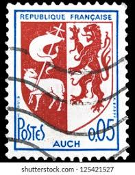 |
| Colecciona Sellos postales (soolucionesSellos) - Perfil | Pinterest | 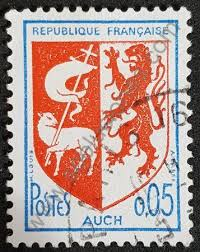 | |
| ebid.net | France 1966 Coat of Arms 0,05f Used Stamp Auch on eBid United States | 217136168 | 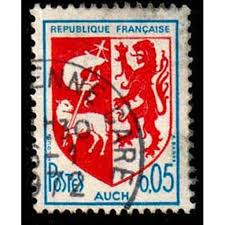 |
| Stamps Around the World (@stampsaroundtheworld) • Facebook | 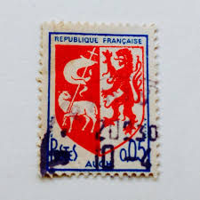 | |
| Redbubble | Louis Griffin Stickers for Sale | Redbubble | 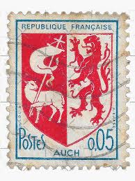 |
| Todocolección | francia 1966 - castillos - castillo de val y la - Buy Antique stamps of France on todocoleccion | 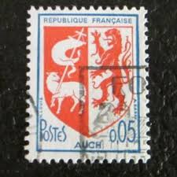 |
| From the collection. This is an Ottoman Empire postage stamp for use in the autonomous province of Eastern Rumelia, issued circa 1880. The face value is 5 paras. The stamp is identified | 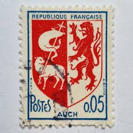 | |
| eBay.de | Briefmarke: Serie Frankreich: 0,05 F Postes, Republique Francaise, Auch | eBay.de | 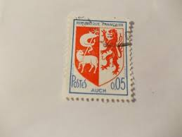 |
| BalkanAuction | Postage stamps | Philately | Collectibles | BalkanAuction | 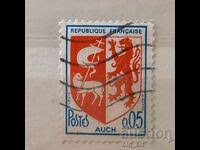 |
| HipStamp | France, Scott #1142, used (o), 1966, Coat of Arms Series, Arms of Auch, 5cts | Europe - France & Colonies, General Issue Stamp / HipStamp | 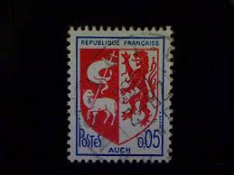 |
| Amazon.com | Amazon.com: France 1534-1535 (Complete.Issue.) unmounted Mint/Never hinged ** MNH 1966 Crest (Stamps for Collectors) Flags/Coats of Arms/Maps : Toys & Games | 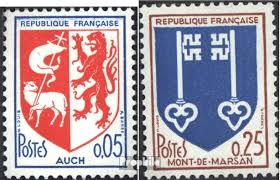 |
| HipStamp | Browse Products in Europe / HipStamp | 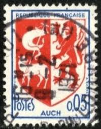 |
| eBay | Yale Bulldogs Coat of Arms Garden Flag and Yard Banner | eBay | 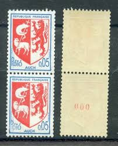 |
| Todocolección | 242045 mnh francia 2009 bordeaux - gironde - Compra venta en todocoleccion | 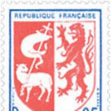 |
| Etsy | The Vintage French Six Postage Stamps.dont Know the Years. - Etsy | 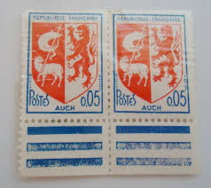 |
| Aukro.sk | Francúzsko 1966 Mi: FR 1534A Séria: Erb | Aukro | 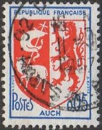 |
| Dreamstime.com | Oran, Coat of Arms Serie, Circa 1960 Editorial Photo - Image of heritage, lion: 117994631 | 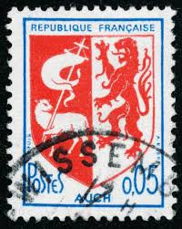 |
| WikiTimbres | Timbre : 1966 AUCH | WikiTimbres | 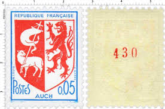 |
| PicClick FR | FRANCE DÉPARTEMENT RÉUNION CFA 1957 - 1959 335 Neuf charnière * EUR 1,00 - PicClick FR | 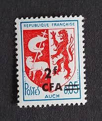 |
| 100% Fait-main | Fait-Maison : ❄️ AEGIS WOOD ❄️ par aegis-wood | 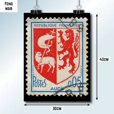 |
| eBay | Timbres unité avec 2 timbres | eBay | 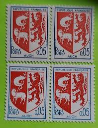 |
| eBay | FRANCASE FRANCE STAMP MNH [SALE] [Choose 10pc of MINT is $3.5] unused WM8219 | eBay | 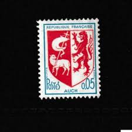 |
| Shutterstock | 22 de agosto de 2025 - Foto de stock 2671961991 | Shutterstock | 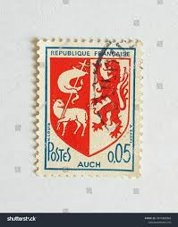 |
| Osta | 21-21 prantsusmaa (220063010) - Osta.ee | 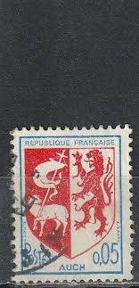 |
| Osta | 21-21 prantsusmaa (221837992) - Osta.ee | 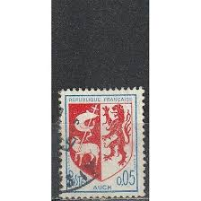 |
| WikiTimbres | Timbre : 1966 AUCH | WikiTimbres | 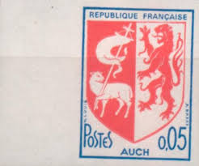 |
| PicClick FR | ROULETTE DE 11 vignettes expérimentales B. PALISSY Pa8f N° rouge au verso. EUR 6,00 - PicClick FR | 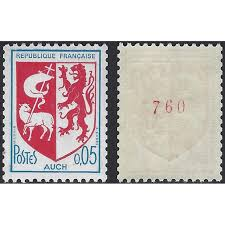 |
| eBay | France 1966 5c Coat of Arms Auch, Standing Lion, Paschal Lamb MNH SC 1142 | eBay | 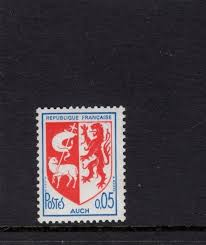 |
| Osta | 73-17 varia leiunurk (227382561) - Osta.ee | 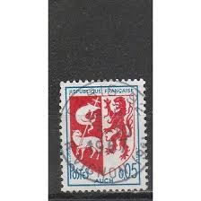 |
| 1967 Republique Francaise old cover（实寄封） one for Rm 6 only one | 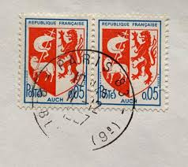 | |
| Shutterstock | France Colorful Postmarks: Over 453 Royalty-Free Licensable Stock Photos | Shutterstock | 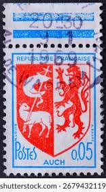 |
| Galéria Savaria | zászló | Galéria Savaria Archív Katalógus | 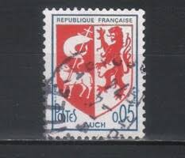 |
| eBay | FRANCASE FRANCE STAMP MNH [SALE] [Choose 10pc of MINT is $3.5] unused WM8418 | eBay | 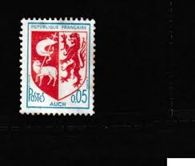 |
| eBay | France 1966 0.05Fr Coat of Arms Sc-1468 Used - US Seller | eBay | 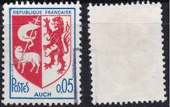 |
| Shutterstock | 11+ Thousand Old French Letters Royalty-Free Images, Stock Photos & Pictures | Shutterstock | 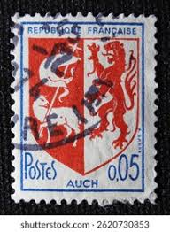 |
| PicClick FR | TIMBRES FRANCE BLASON et Armoiries de villes neufs (50315) EUR 48,00 - PicClick FR | 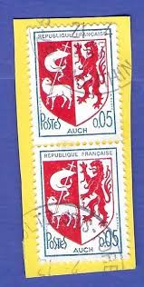 |
| Wiki Timbres | Département : Gers | WikiTimbres | 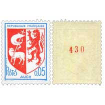 |
| French Philately | 1966 Yt 1468-1469 Coat of Arms Sc 1142, 1144 - French Philately - Stamps of France for Sale | 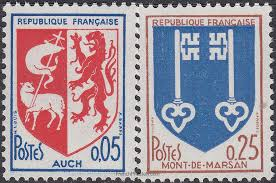 |
| eBay | FRANCASE FRANCE STAMP MNH [SALE] [Choose 10pc of MINT is $3.5] unused WM8310 | eBay | 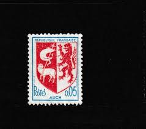 |
| eBay | France 1966 5c Arms of Auch, Standing Lion, Paschal Lamb Gutter Pair MNH SC 1142 | eBay | 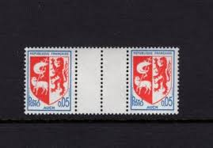 |
| Marché du timbre | 16072508501719868414394172.jpg | 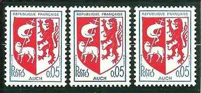 |
| eBay | France Yvert Number 1468-1469 ** Coat of Arms 1966 | eBay | 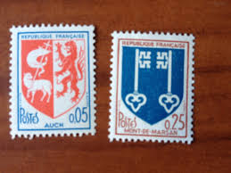 |
| Todocolección | sello francia - republica francesa - escudo - m - Buy Antique stamps of France on todocoleccion | 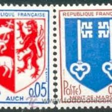 |
| eBay | France 1966 MNH Mi 1534A-1535 Sc 1442,1444 Arms of Auch & Mont-de-Marsan ** | eBay | |
| iStock | France Postage Stamp Stock Photo - Download Image Now - Anniversary, Antique, Black Background - iStock | |
| Bob Shop | France & Colonies - 1960 France - L`Ecu de Troyes 0.10 et Paris 0.30 used, stamped was listed for 3.60 on 26 Jul at 17:46 by KHB56 in Johannesburg (ID:646819495) | |
| Redbubble | Vintage 1980 France Stamp of Griffin & Sheep" Samsung Galaxy Phone Case for Sale by yousufi | Redbubble | |
| Todocolección | republique française - escudo de armas de auch - Buy Antique stamps of France on todocoleccion | |
| volstamp.in.ua | Buy 1966 France Stamp Series (Coat of Arms) MH №1534-1535 | |
| PicClick FR | BEAU TIMBRE DE France N° 1857 - Obliteration Cayenne EUR 5,00 - PicClick FR | |
| Shutterstock | France Circa 1951 Cancelled Postage Stamp Stock Photo 2645464729 | Shutterstock | |
| Todocolección | sello francia. escudos de armas (1966) - Buy Antique stamps of France on todocoleccion | |
| ebid.net | FRANCE, CREST, Coat of Arms Auch, red 1966, 0.05F, #3 on eBid United States | 194075171 | |
| eBay | No Gum Miniature Sheet Topical Postal Stamps for sale | eBay |